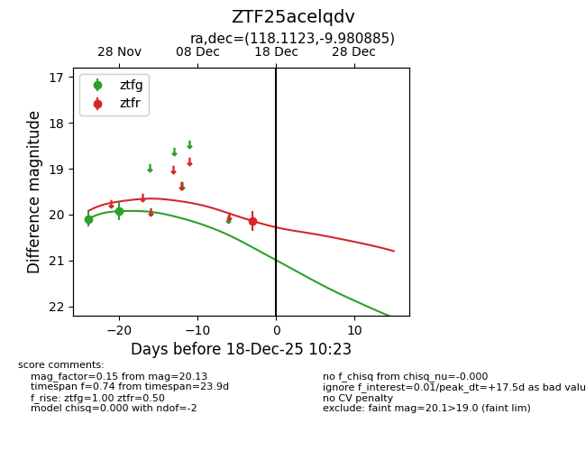
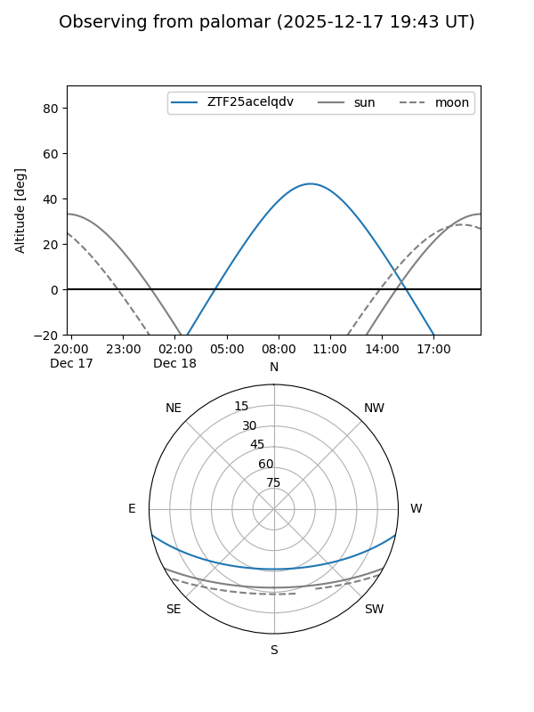
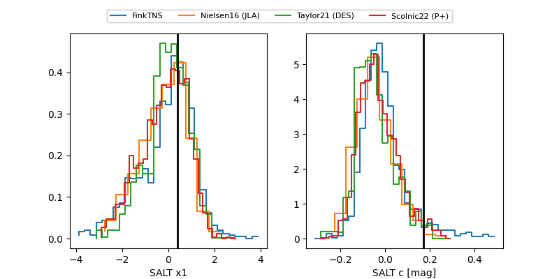

ZTF25acelqdv
Target ZTF25acelqdv at 2025-12-21 12:37
Aliases and brokers:
FINK: fink-portal.org/ZTF25acelqdv
Lasair: lasair-ztf.lsst.ac.uk/objects/ZTF25acelqdv
ALeRCE: alerce.online/object/ZTF25acelqdv
alt names
ZTF25acelqdv (ztf,fink_ztf)
Coordinates:
equatorial (ra, dec) = 118.1123,-9.98089
equatorial (HMS+DMS) = 07:52:26.95,-09:58:51.19
galactic (l, b) = (228.9285,+8.71746)
Flags:
Photometry:
last ztfg=19.93, ztfr=20.29
2 ztfg, 2 ztfr detections
Lightcurve

Visibility


Additional plots
